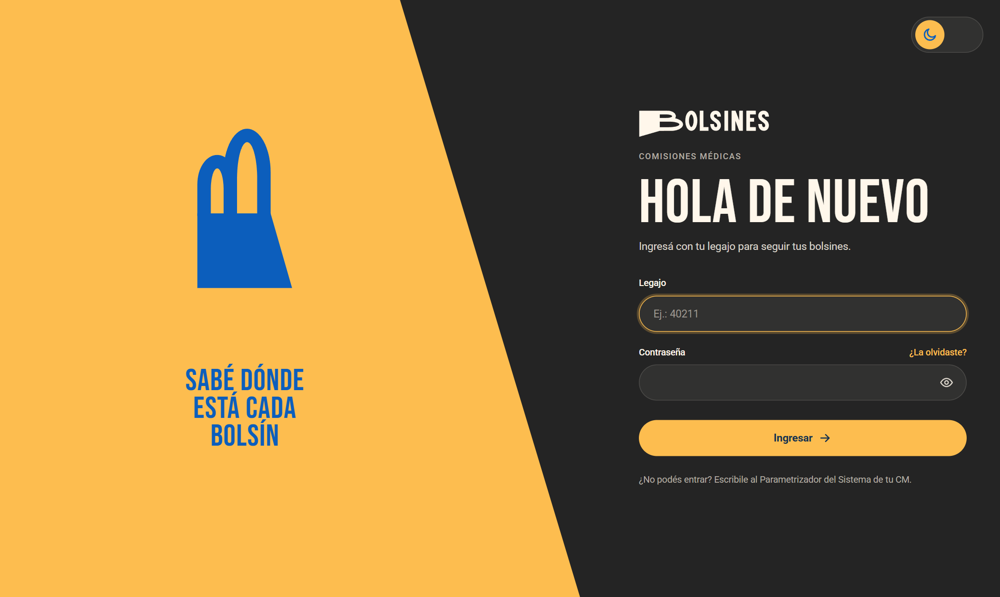
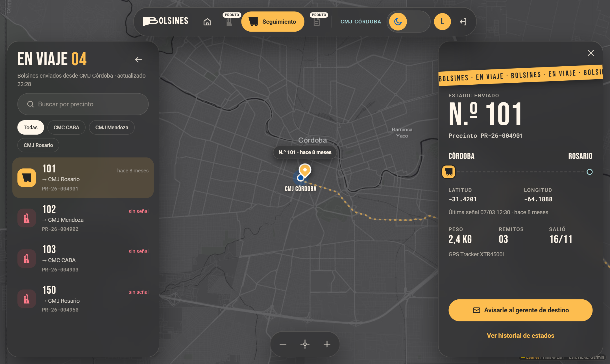
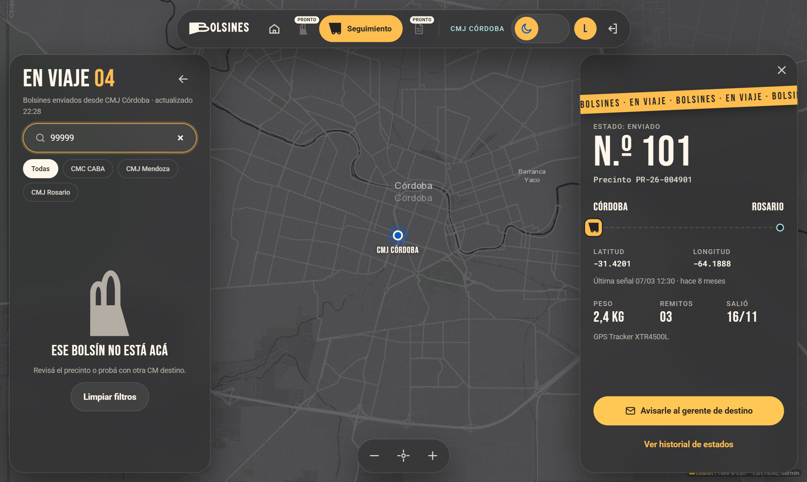
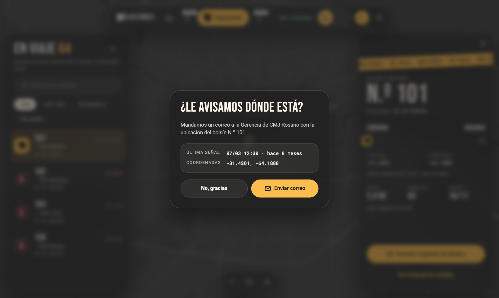

Universidad Tecnológica Nacional · Facultad Regional Córdoba Ingeniería en Sistemas de Información · Cátedra Diseño de Sistemas de Información
Proyecto Práctico de Aplicación Integrador
Entrega 2 Diseño
Caso de estudio Sistema Bolsines · CU 36 Consultar seguimiento de bolsines
Patrón Adapter (Gamma et al.)Curso 3K2Grupo 5Entrega E217/11/2026
Docentes del curso
Ing. Cecilia MassanoProfesora Adjunta
Ing. Valeria AbdalaJefa de Trabajos Prácticos
Mauro BastasiniAyudante Alumno
Mateo CrespoAyudante Alumno
Integrantes
Aldasoro, Lautaro Gabriel408739
Alonso Piñero, Bernardita María409041
Bergero Juncos, Nicanor Mario409938
Fini, Máximo408646
Giayetto, Francisco410633
Maldonado, Abril409312
Pérez, Nehuén410065
Ramos, Mateo Ignacio411186
Diseño de Sistemas de Información · Ciclo lectivo 2026PPAI2026_3K2_G5_E2_Diseño
1. Identificación del patrón implementado
1.1 Patrón: Adapter (estructural, GoF)
Problema que se resuelve. Para seguimiento de bolsines (CU 36) el sistema debe consultar la ubicación de cada bolsín a un GPS Tracker. Existen tres modelos de dispositivo con interfaces incompatibles entre sí, y el sistema no debe depender de cuál esté en uso:
Justificación. Sin el patrón, el gestor tendría condicionales por modelo y conocería nombres de operaciones, parámetros y formatos de cada proveedor; agregar un cuarto modelo obligaría a modificarlo. Con Adapter se define una interfaz objetivo única (IAdaptadorGPSTracker) y un adaptador por modelo que traduce el pedido (parámetros) y la respuesta (JSON/CSV/matriz) a una matriz común String[][] con una fila por bolsín: número, latitud, longitud, fecha y hora de última actualización. Un nuevo modelo solo requiere un adaptador nuevo (principio abierto/cerrado).
Rediseño de la realización del CU 36 aplicando Adapter. Visibilidad: + público, - privado. (Diagrama fuente editable: ConsignasyDiagramas/PPAI2026_3K2_G5_E2_Adapter_CU36.drawio.)
3. Vista dinámica – Diagrama de secuencia de diseño
Parte del escenario rediseñada por el patrón (paso 4 y 5 del CU 36), modelo XTR-4500L. Para NavTrack y GeoPulse la secuencia es idéntica cambiando el adaptador concreto y la operación del servicio.
sequenceDiagram
participant G as :GestorSeguimientoBolsines
participant I as :InterfazGPS
participant A as :AdaptadorGPSXTR4500L
participant S as :ServicioGPSTrackerXTR4500L
G->>G: buscarDatosLocalizacion()
G->>I: obtenerLocalizacion(datosBolsines: String[][])
I->>A: new(claveAPI: String)
I->>A: obtenerLocalizacionBolsines(datosBolsines: String[][]): String[][]
A->>A: solicitarLocalizacion(datosBolsines: String[][])
loop por cada bolsín
A->>S: getBolsinLocation(apiKey, numeroBolsin: int, codigoCMOrigen: String): String
end
A->>A: adaptarLocalizacion()
A-->>I: String[][]
I->>G: enviarDatosLocalizacion(datosLocalizacion: String[][])
obtenerLocalizacion(): el gestor crea la InterfazGPS y le pasa una matriz (nº de bolsín, CM origen, CM destino). Según el modelo en uso crea el adaptador concreto con la clave API de ese modelo.
obtenerLocalizacionBolsines() (polimórfico): delega en el adaptador la obtención y adaptación: invoca solicitarLocalizacion(), luego adaptarLocalizacion() y retorna la matriz común.
solicitarLocalizacion(): adapta el pedido (nº a entero, CM origen para XTR / CM destino para NavTrack / ninguna para GeoPulse) e invoca el servicio.
adaptarLocalizacion(): interpreta JSON, CSV o matriz y agrupa en filas [nº, latitud, longitud, fecha y hora].
enviarDatosLocalizacion(): la InterfazGPS entrega al gestor los datos adaptados para ubicarlos en el mapa.
Flujo alternativo A3: si el servicio no responde, el adaptador propaga GPSTrackerError; el gestor lo captura y marca los bolsines como «sin señal» (la pantalla muestra el estado de error con opción de reintentar). Si el GPS no informa un bolsín puntual, ese bolsín queda sin señal y los demás se muestran normalmente.
4. Detalles de implementación
Aspecto
Decisión
Lenguaje
Python 3.11
Framework
Django 5.0 (monolítico: vistas, ORM, autenticación y migraciones incluidos)
Tecnología
Web (plantillas Django + HTML/CSS/JS; mapa con Google Maps JavaScript API, con mapa de reemplazo si no hay clave)
Base de datos
SQLite
Persistencia
Django ORM (modelos Bolsin, ComisionMedica, Empleado, Remito, etc. + migraciones)
GPS Tracker
API simulada provista por la cátedra (Spring Boot, gps-api/, puerto 8080), consumida por HTTP con requests; una clave API por modelo
Correo (CU 30)
django.core.mail (salida por consola por defecto; SMTP configurable por variable de entorno)
Pruebas
manage.py test: 17 pruebas (adaptadores, interfaz, gestor con A1/A3, vista, CU 30)
Capas y consistencia con el modelado
Boundary: vista seguimiento_views.py + plantilla (seguimiento/index.html) e InterfazGPS.
Control:GestorSeguimientoBolsines.
Entidades: modelos Django.
El frontend nunca consulta al GPS: siempre pasa por el gestor.
Correspondencia con el código (Python): GestorSeguimientoBolsines → bolsines/services/gestor_seguimiento.py; InterfazGPS → bolsines/gps/interfaz_gps.py; IAdaptadorGPSTracker y los tres adaptadores → bolsines/gps/adaptadores.py; servicios (adaptables) → bolsines/gps/servicios.py. Los métodos están en snake_case (convención de Python); el boundary web (vista y plantilla) cumple el rol de mostrar…/tomar… del gestor.
Usuario de prueba: legajo 40211, contraseña bolsines2026 (Encargado de Bolsines, CM-CBA-01).
Flujos implementados
Flujo
Estado
Principal (1–9, con CU 30)
Implementado
A1 Sin bolsines Enviados
Implementado (estado vacío)
A2 Filtro sin resultados
Implementado
A3 GPS no informa / no responde
Implementado (estado de error + reintentar)
A4 Cancelar
Implementado (cerrar paneles / volver)
A5 No enviar correo
Implementado (botón «No, gracias» del diálogo)
5. Capturas del sistema funcionando

Figura 1. Inicio de sesión del Encargado de Bolsines.

Figura 2. Flujo principal del CU 36: bolsines enviados desde la CM del usuario, ubicados en el mapa con los datos del GPS Tracker XTR-4500L. Los bolsines que el GPS no informa aparecen «sin señal» (flujo A3).

Figura 3. Flujo A2: no se encuentra bolsín con el número de precinto ingresado.

Figura 4. Diálogo de confirmación para notificar la ubicación al Gerente de la CM destino (CU 30); «No, gracias» corresponde al flujo A5.